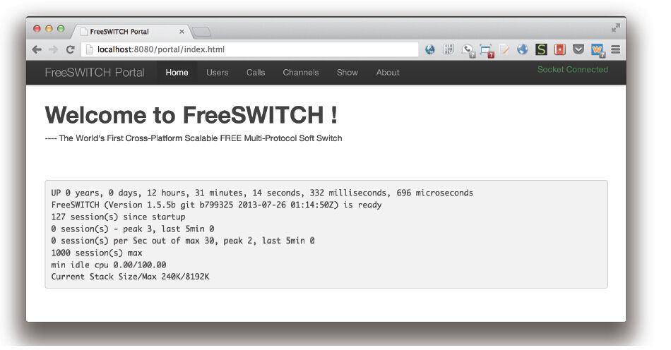
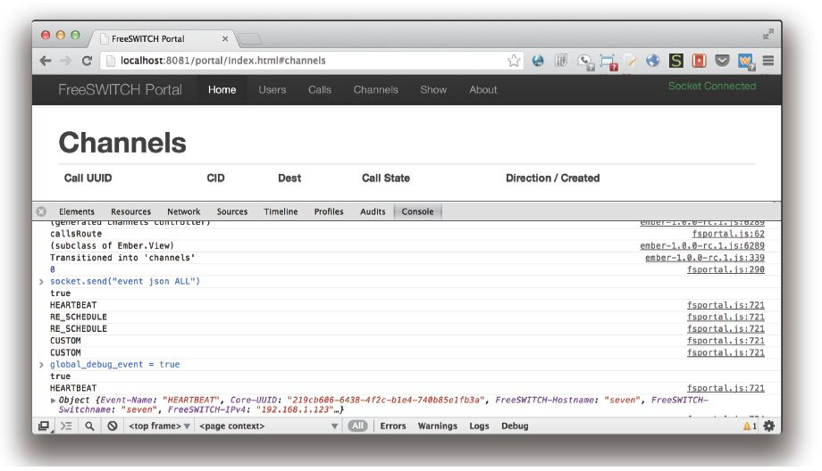

10.6 FreeSWITCH图形用户界面简介
图形用户界面即我们通常所说的GUI（Graphic User's Interface）。对于广大开发者和极客们来讲，使用命令行配置和手工修改配置文件是最理想的选择。但对于FreeSWITCH新手或维护人员来讲，可能更喜欢一个图形界面来帮助理解和使用FreeSWITCH。
对于GUI的开发来讲，FreeSWITCH提供了丰富的底层接口支持，因而很容易在上层进行开发。但是，开发一个功能全又适合所有人胃口的GUI也绝非易事。FreeSWITCH官方的wiki [1] 上列举了一些现有的GUI产品，有开源的也有商业的，它们各有特点，但到目前为止还没有一个占统治地位的GUI产品。当然，出现这一问题的原因也可能是FreeSWITCH提供的接口和API比较丰富，因而很容易集成到现成的业务系统中去，因此开发通用GUI的需求不是很强烈。
一般来说，开发FreeSWITCH的GUI有两种方法：
·通过提供图形界面，后台修改FreeSWITCH的XML配置文件，并调用reloadxml或其他重启指令使之生效。这种方法只适合管理一台FreeSWITCH，即适合少量用户的管理。
·通过使用FreeSWITCH提供的xml_curl接口，提供一个HTTP服务器动态向FreeSWITCH提供XML。这种方法可以管理多台FreeSWITCH，并适合大规模部署。
下面我们来介绍几款典型的开源GUI产品。
10.6.1 FusionPBX
FusionPBX是使用PHP开发的FreeSWITCH GUI。它支持Linux、Windows、BSD、Mac OS X等多种操作系统，并支持PostgreSQL、MySQL、SQLite等数据库。
它是通过将数据存储到数据库中，并修改本地的XML配置文件实现的。
它支持无限的分机、IVR、呼叫组、传真、会议、队列、呼叫前转、点击拨号，以及实时呼叫状态显示等诸多特性，使用起来比较方便。
FusionPBX一直处于比较活跃的开发中。更多的介绍请参考http://www.fusionpbx.com。
10.6.2 blue.box
blue.box是2600Hz团队开发的一款开源的GUI产品，使用PHP/MySQL技术开发。它最初的开发是基于著名的Asterisk的GUI FreePBX，号称是FreePBX V3。它也是使用修改本地XML配置文件并重新加载的方式工作。除支持普通的用户、分机、路由管理外，它还支持多语言和多租户。
由于2600Hz团队近几年一直把精力放在基于Erlang的云平台上，所以blue.box的开发一度中断。不过，在ClueCon 2013上，2600Hz团队又宣布了该项目的重生，新的开发计划将基于Python。
更多的介绍请参考：http://www.2600hz.org。
10.6.3 FreeSWITCH Portal
FreeSWITCH-Portal是笔者发起的一个项目。与其他GUI系统不同的是，该项目并不致力于替代上述的GUI系统，而是作为它们的一个补充，提供一些开发者常用的功能，便于新手进行学习。
首先，FreeSWITCH Portal提供了开箱即用（Out of the Box）功能。上述的各种GUI产品都或多或少依赖于Apache/Nginx等Webserver、PHP等开发语言及PostgreSQL/MySQL等数据库，因此，配置GUI本身就需要一定的知识和基础。而FreeSWITCH Portal内置于FreeSWITCH，它仅依赖于mod_xml_rpc模块提供的内置于FreeSWITCH的Webserver。该模块是默认编译的，但不加载，因此用户只需要加载该模块即可使用它。
在FreeSWITCH控制台上执行下列命令就可以加载该模块：
freeswitch> load mod_xml_rpc
如果想让该模块随着FreeSWITCH启动而自动加载，可以在conf/autoload_configs/modules.xml中将模块的注释去掉，去掉注释后的配置如下：
<load module="mod_xml_rpc"/>
然后使用浏览器打开http://localhost:8080/portal（如果FreeSWITCH所在主机与要访问的电脑不同，则将localhost换成FreeSWITCH所在主机的IP地址），如果提示分别输入用户名和密码则分别输入“freeswitch”和“works”，该密码可以在conf/autoload_configs/xml_rpc.conf.xml中配置。系统界面如图10-11所示。

图10-11 FreeSWITCH Portal
系统主菜单一共可以分为以下几个部分：
·Users：显示所有用户。
·Calls：显示当前的呼叫状态，如果选中“Auto Update”复选框，则表示它是实时更新的。
·Channels：显示当前所有Channel的状态，它是实时更新的。
·Show：调用系统的show命令显示很多FreeSWITCH内部的东西，如注册信息、已加载的模块、App、API等。
如果看到绿色的“Socket Connected”，则表示Websocket连接正常。注意，目前Websocket是不认证的，因此可能有安全性问题，如果你在生产系统中使用，请注意安全。
如果你看到右上角红色的“Socket Disconnected”也不用担心，那是因为你的系统不支持Websocket，修改xml_rpc.conf.xml，将“enable-websocket”参数设为true就可以了。
<param name="enable-websocket" value="true"/>
另外，你也需要使用能支持Websocket的浏览器，现代的浏览器如Chrome、FireFox、Opera、IE9及以上版本等都支持Websocket。
如果你的系统不支持Websocket，你也不会损失太多功能。数据的更新会自动变成通过Ajax轮循方式获取。
另外，如果你是一个开发者的话，相信你比较关心系统的事件。我们在5.1.1节的最后讲过在fs_cli中订阅和查看事件的方法，但是好多人会让FreeSWITCH动辄数百行的“大”事件吓倒。在FreeSWITCH Portal里，笔者还留了一个“后门”，可以允许用户用更好的方法查看系统事件。
很多浏览器（如Chrome或FireFox）都具有网页调试功能（FireFox上有著名的FireBug插件）。我们这里以Chome为例来说明。如图10-12所示，在Chrome浏览器页面上右击，单击最下方的“审查元素”（Inspect Elements），即可在页面下方打开调试窗口。

图10-12 通过浏览器的调试功能查看系统事件
在调试窗口中切换到Console页，输入：
event("ALL");
即可订阅全部事件。如果这时候打个电话，就可以看到调试窗口中输出各种事件的名字，读者就知道打一个电话大体都会产生哪些事件了。细心的读者也可以做一下“慢动作”，顺便观察不同时间产生的不同事件，如振铃时产生什么事件、接听时产生什么事件、挂机后又产生什么事件等。
另外，通过打开全局的调试事件的选项可以看到更详细的事件信息，在调试窗口中输入：
global_debug_evnet = true;
如果不想看详细事件了，则把上述变量改成false即可，或直接刷新页面。
当然，任何时候都可以通过api或bgapi函数来直接执行FreeSWITCH的API命令，如：
api("status");
api("sofia status");
bgapi("originate user/1000 &echo");
总之，FreeSWITCH Portal致力于简单、实用、易用。如果读者发现上面提到的某些功能不好用，可以更新到最新的版本（2013年8月14日以后的版本）。在该系统的About页面上，也列了一些将要完成（Todo）的功能，如增加国际化（如中文）语言的支持等，如果读者有兴趣的话也欢迎贡献自己的力量。
[1] http://wiki.freeswitch.org/wiki/Freeswitch_Gui。